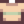

Sap
| Sap | |||||
| A fluid obtained from trees. | |||||
| Information | |||||
| Source | Trees • Slimes | ||||
| Energy / Health |
|
||||
| Sell Price | |||||
Sap is a foraged item that drops from trees when they are cut down. It is used in various crafting recipes. Sap can be consumed, however it decreases energy by 2 points.
Sap may also be obtained from tapping Mahogany Trees and all Slimes except Big Slimes.
Vincent sells a Sap in his shop at the Desert Festival for  1 Calico Egg.
1 Calico Egg.
Recipes
| Image | Name | Description | Ingredients | Recipe Source |
|---|---|---|---|---|
| Basic Fertilizer | Improves soil quality a little, increasing your chance to grow quality crops. Mix into tilled soil. | |||
| Quality Fertilizer (2) | Improves soil quality, increasing your chance to grow quality crops. Mix into tilled soil. | |||
| Deluxe Fertilizer (5) | Greatly improves soil quality, increasing your chance to grow quality crops. Mix into tilled soil. | |||
| Torch | Provides a modest amount of light. | Starter | ||
| Trap Bobber | Causes fish to escape slower when you aren't reeling them in. | |||
| Fiber Seeds (4) | Plant these in any season. Does not require watering. Harvest with the scythe. Takes 7 days to grow. | |||
| Quality Bobber | Boosts the quality of fish that you catch. | |||
| Statue Of Blessings | Touching the statue gives a unique blessing every day. |
Gifting
| Villager Reactions
| |
|---|---|
| Hate | |
Bundles
Five hundred Sap are required in the  Sticky Bundle in the Crafts Room (Remixed).
Sticky Bundle in the Crafts Room (Remixed).
Tailoring
Sap is used in the spool of the Sewing Machine with Cloth in the feed to create a 
Quests
Sap is not used in any quests.
Trading
Once unlocked, the Raccoon's wife near the Giant Stump will trade for Sap.
| Image | Name | Description | Price | Requirements |
|---|---|---|---|---|
| Summer Squash Seeds | Plant in the summer. Takes 6 days to grow, and continues to produce after first harvest. | 1st Request Completed |
History
- 1.4: Can now be used in Tailoring.
- 1.5: Used as an ingredient to the Deluxe Fertilizer, Fiber Seeds, and Quality Bobber recipes. Is now used in the Sticky Bundle.
- 1.6: Can now be traded for Summer Squash Seeds. Recipe for Quality Fertilizer changed. Can now be purchased at Desert Festival.
| Foraging | |
|---|---|
| Basic | Sap |
| Spring | Common Mushroom • Daffodil • Dandelion • Leek • Morel • Salmonberry • Spring Onion • Wild Horseradish |
| Summer | Fiddlehead Fern • Grape • Red Mushroom • Spice Berry • Sweet Pea |
| Fall | Blackberry • Chanterelle • Common Mushroom • Hazelnut • Wild Plum |
| Winter | Crocus • Crystal Fruit • Holly • Snow Yam • Winter Root |
| The Beach | Clam • Cockle • Coral • Mussel • Nautilus Shell • Oyster • Rainbow Shell • Sea Urchin • Seaweed |
| The Mines | Cave Carrot • Purple Mushroom • Red Mushroom |
| The Desert | Cactus Fruit • Coconut |
| Skull Cavern | Dinosaur Egg • Fiddlehead Fern |
| Ginger Island | Ginger • Magma Cap |